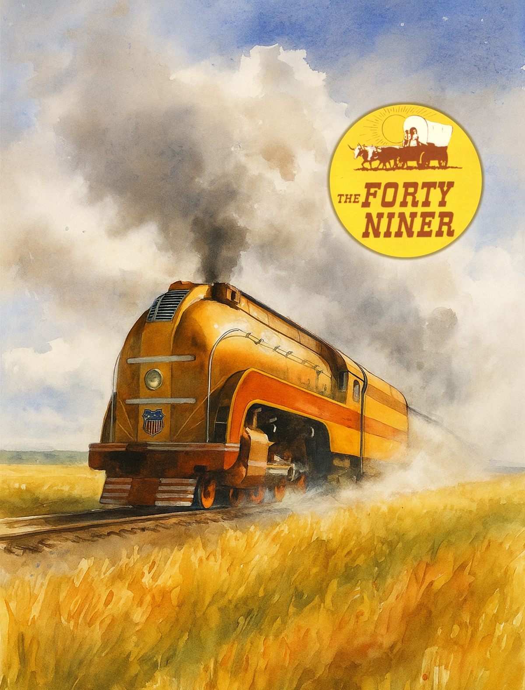

THE TRANSCONTINENTAL RAILROAD
1864:
1864:
Forty-Niner
Railroading in the Western United States
CHICAGO — OMAHA — CHEYENNE
— SALT LAKE — SAN FRANCISCO

MAGAZINE GAME RULEsVERSION 1.6SEARCHABLE REFERENCE
At a glance
2–6Players
16Minor companies
$80UP initial share price
Phase 6Abilities expire
These rules supplement 1861: Railways of the Russian Empire and incorporate specified rules from 1867: Railways of Canada. Consult 1861 for rules not covered here.